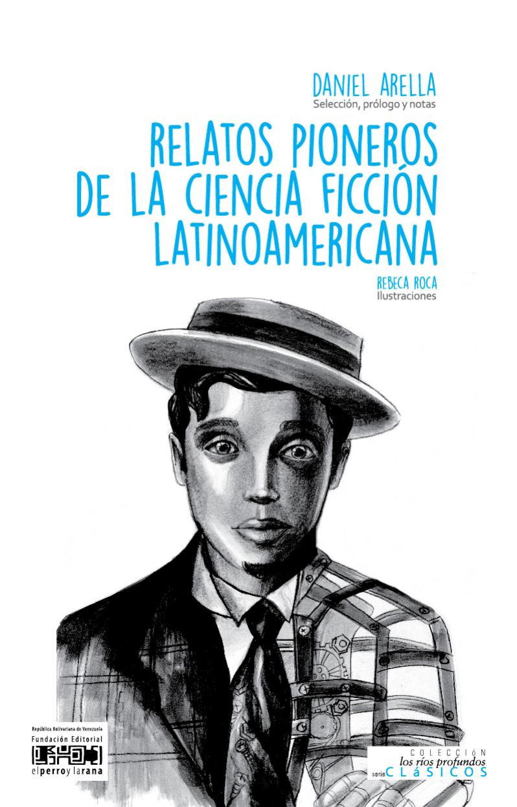
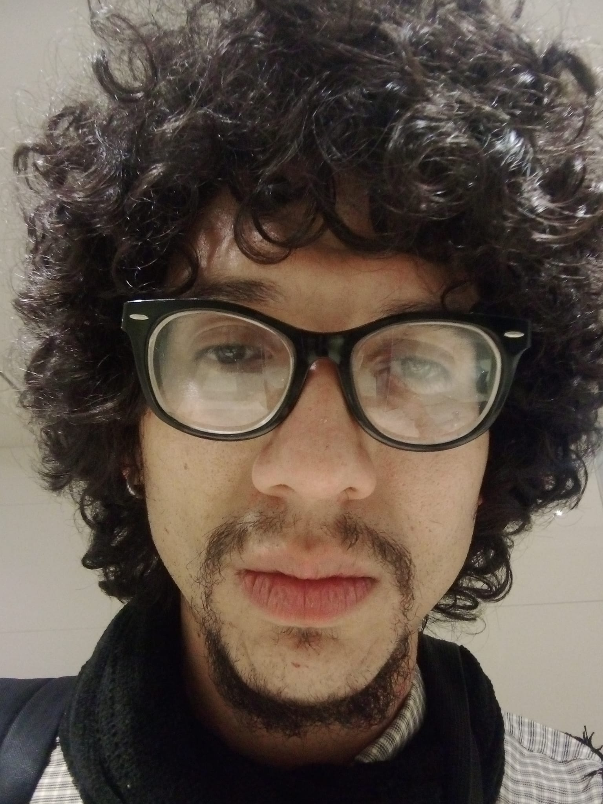
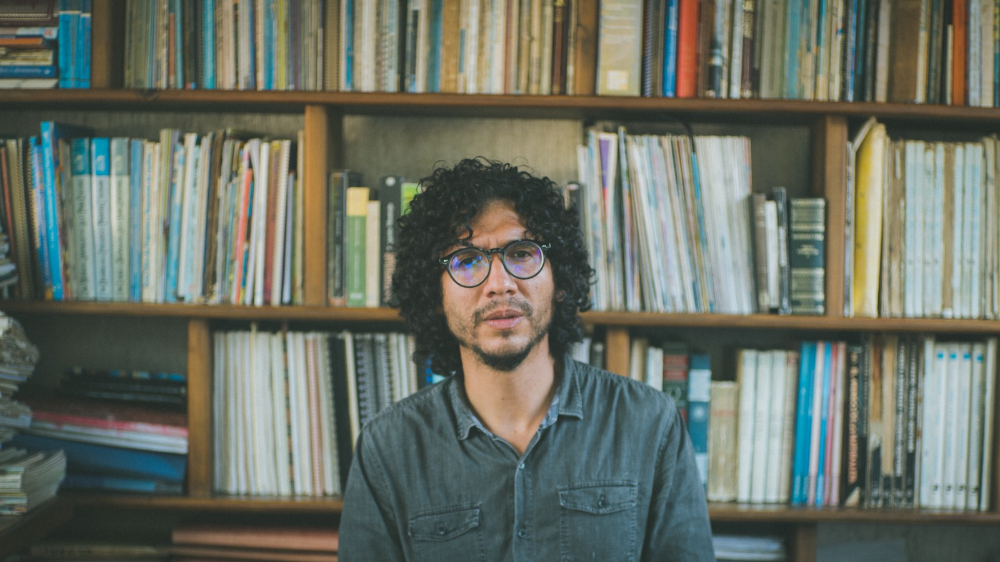
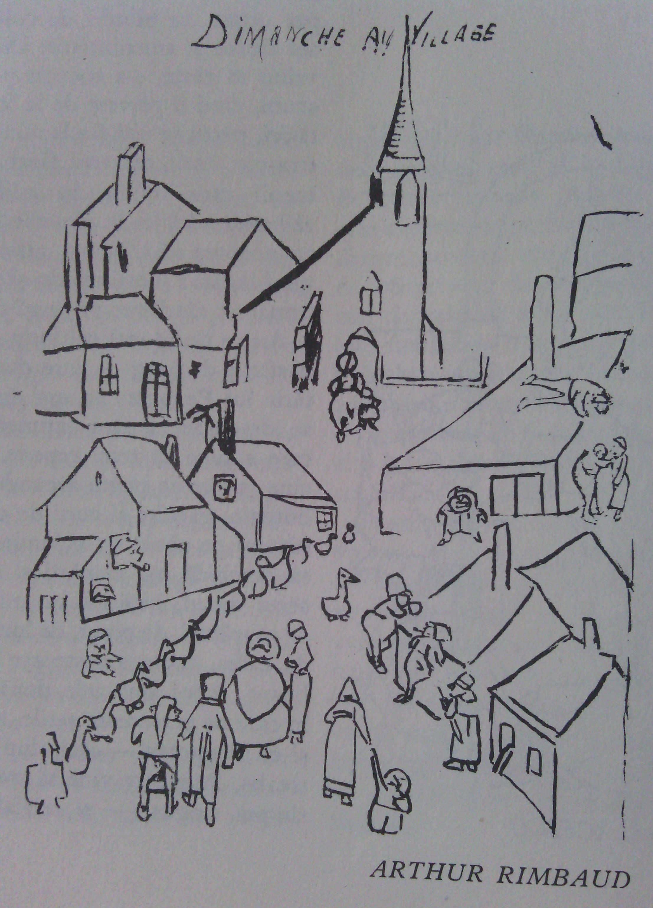

Biblioteca de autor
Daniel Arella
Poesía, ensayo, narrativa, eventos y trabajo editorial reunidos en una portada de lectura y recorrido.



Selección editorial
Recomendaciones

Rostro de nadie
Poema incluido en la selección de Archivo Venezuela 2024 y también presente en el libro del mismo nombre.
Relatos pioneros de la ciencia ficción latinoamericana
Selección y prólogo de Daniel Arella en una antología sobre la ciencia ficción latinoamericana temprana.
Trayectoria, premios y trabajo editorial
Biografía, formación, premios y participación en revistas, congresos y talleres.
Artículos recientes
Blog
-
Desde el inframundo del lenguaje
Mención honrosa en el I Premio de Ensayo sobre la obra de Ida Gramcko. Reflexión sobre el lenguaje y la escritura.
-
La ciencia ficción latinoamericana antes de Asimov
En Latinoamérica se escribía ciencia ficción antes de que Asimov pensara en escribir su Fundación. Fragmento del prólogo a la antología.
Notas y referencias
Prensa
-
Bordes: Revista de Estudios Culturales
Referencia editorial externa sobre Relatos pioneros de la ciencia ficción latinoamericana.
-
Nota sobre Relatos pioneros
Nota sobre Relatos pioneros de la ciencia ficción latinoamericana en Cosmocápsula.
-
Filven Mérida 2016 proyecta obras literarias de escritores nacionales e internacionales
Noticia de Alba Ciudad 96.3 FM sobre la Filven Mérida 2016, con mención a Daniel Arella.